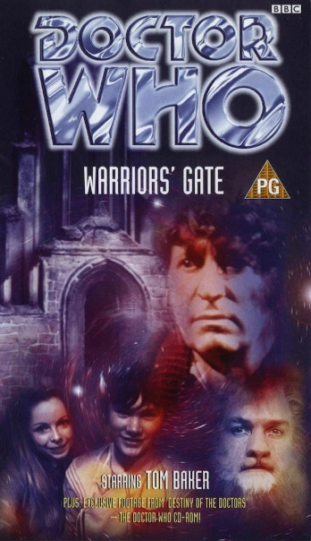
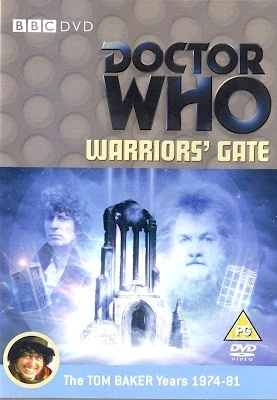
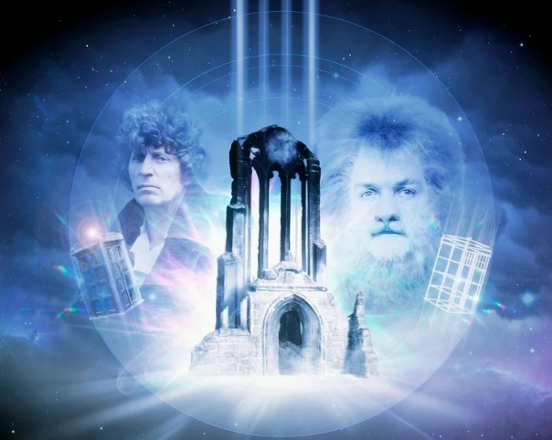
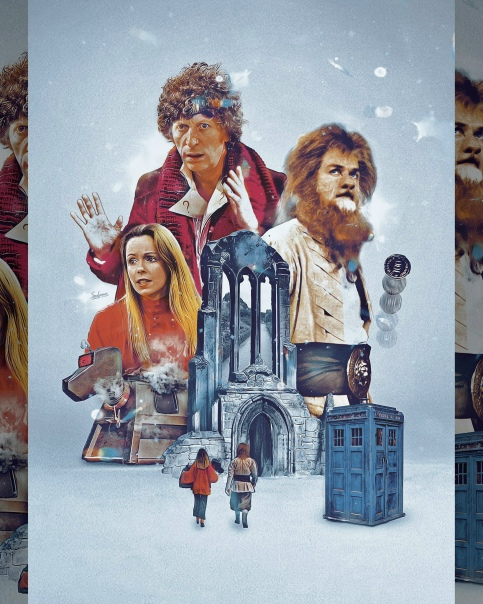
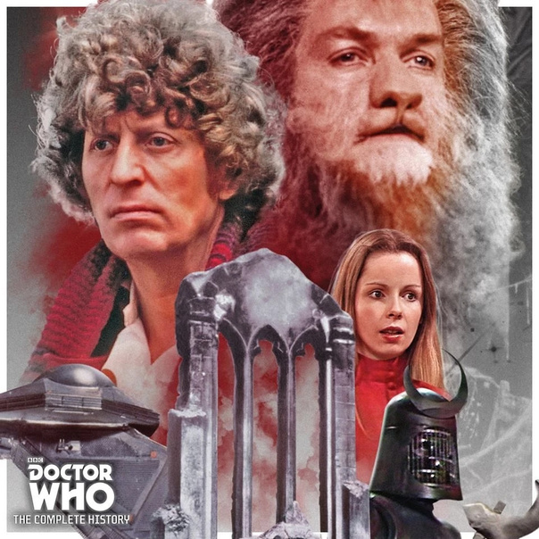

Эра Четвертого Доктора (18 сезон)
<<< НАЗАД ||| 5. Врата воинов ||| ДАЛЬШЕ >>>
Субтитры: Русские и Английские |  |
|---|---|
с фанатским обновлением визуальных эффектов (cunningmunki) Субтитры: Русские и Английские | |
с обновлением визуальных эффектов (cunningmunki) Субтитры: отсутствуют | |
Warriors' Gate
Дата выхода: 3-24 января 1981
Формат: 4 эпизода по 25 мин.
 |  |  |
Третья часть Э-пространственной трилогии и прощальная серия для Романы и К-9. ТАРДИС застревает в пограничном пространстве между Вселенными, где время не имеет направления. Здесь Доктор встречает тарилов — львиноподобных гуманоидов, бывших рабовладельцев, а ныне рабов на ветшающем звездолёте. Помогая им обрести свободу, Романа решает остаться в Э-пространстве и забирает К-9. На площадке в тот момент шла своя драма: исполнители главных ролей, Том Бейкер и Лалла Уорд, два года тайно встречались — и как раз расходились. На съёмках они почти не разговаривали, а через несколько недель после их окончания неожиданно поженились. Брак продержался шестнадцать месяцев.
  VHS+Boxset - ноябрь 1997 |   DVD+Boxset - 26 января 2009 |  Blu-ray - 18 марта 2019 * Версия в нашей группе |
|---|







Трейлер: